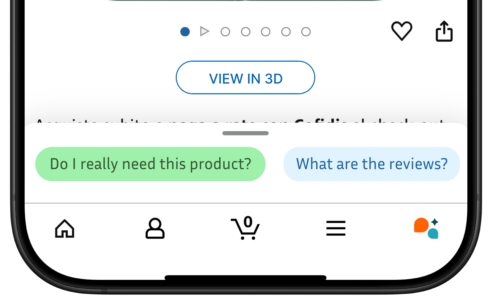
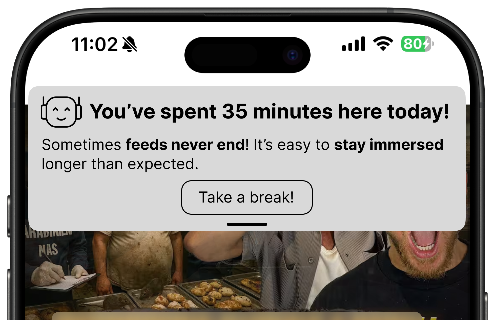
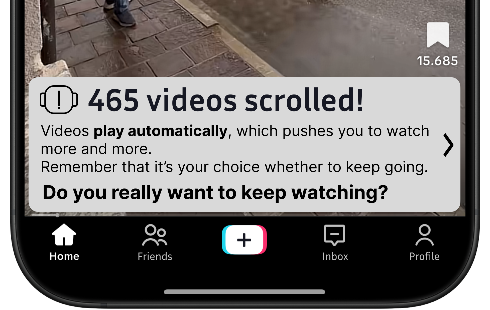
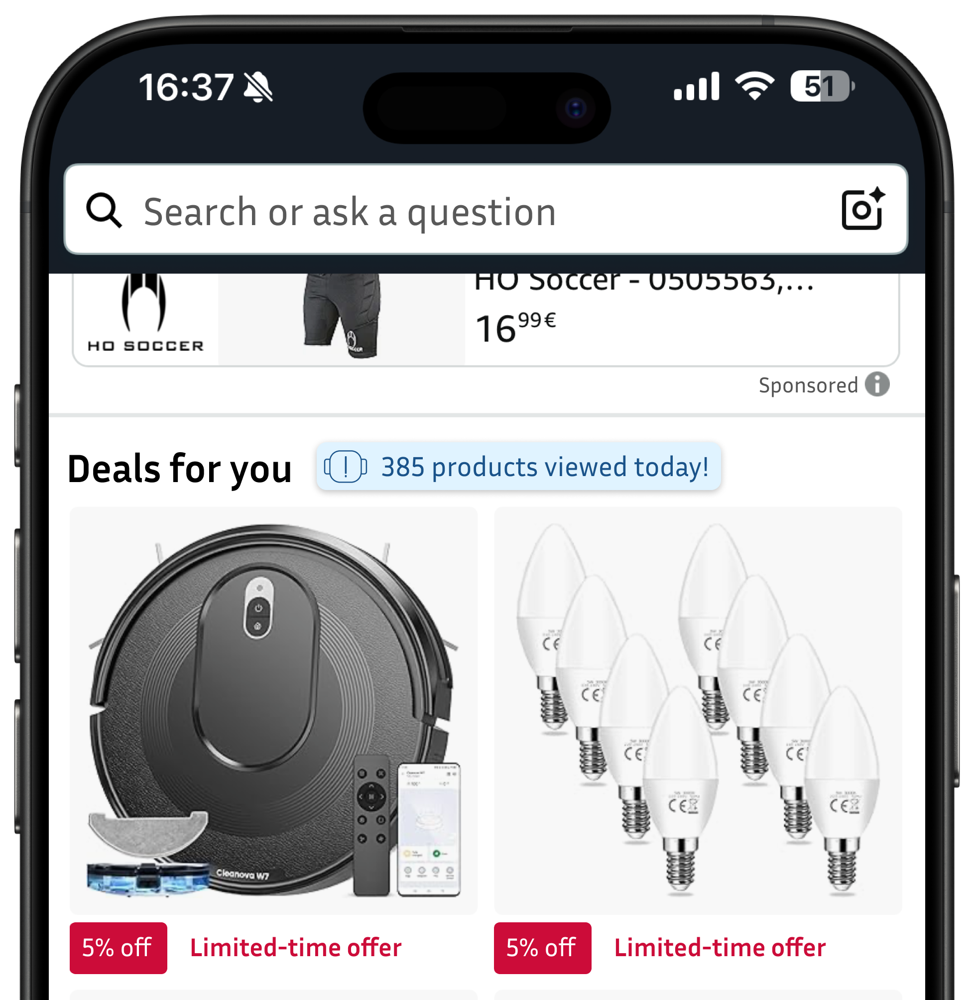
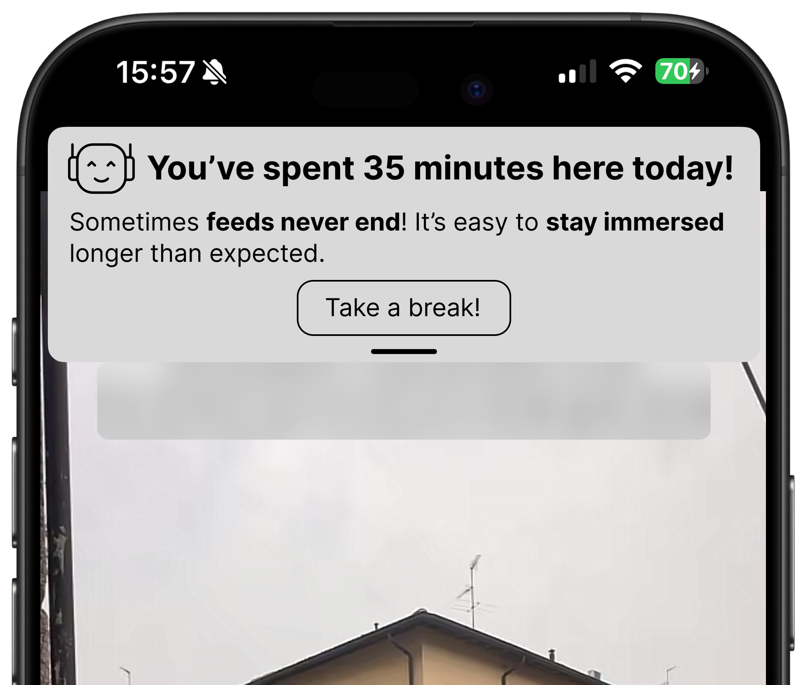
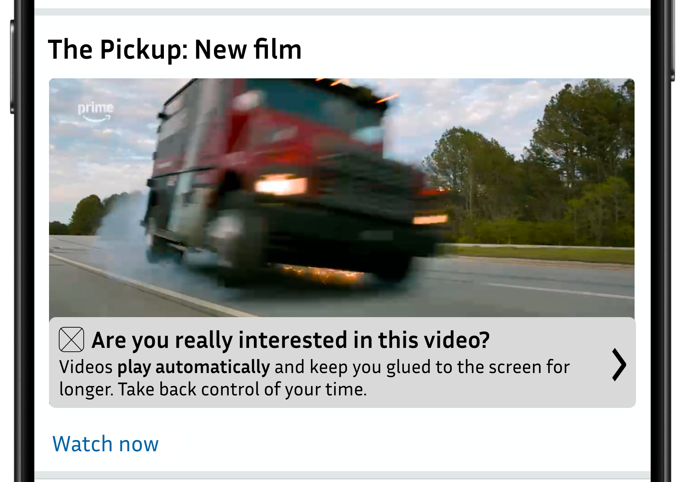
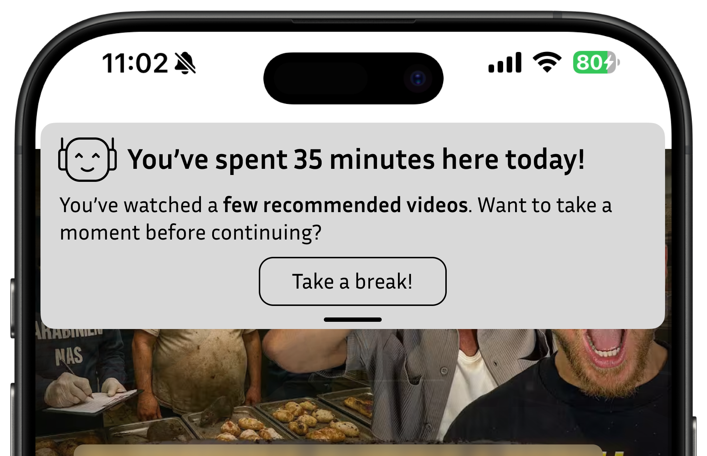
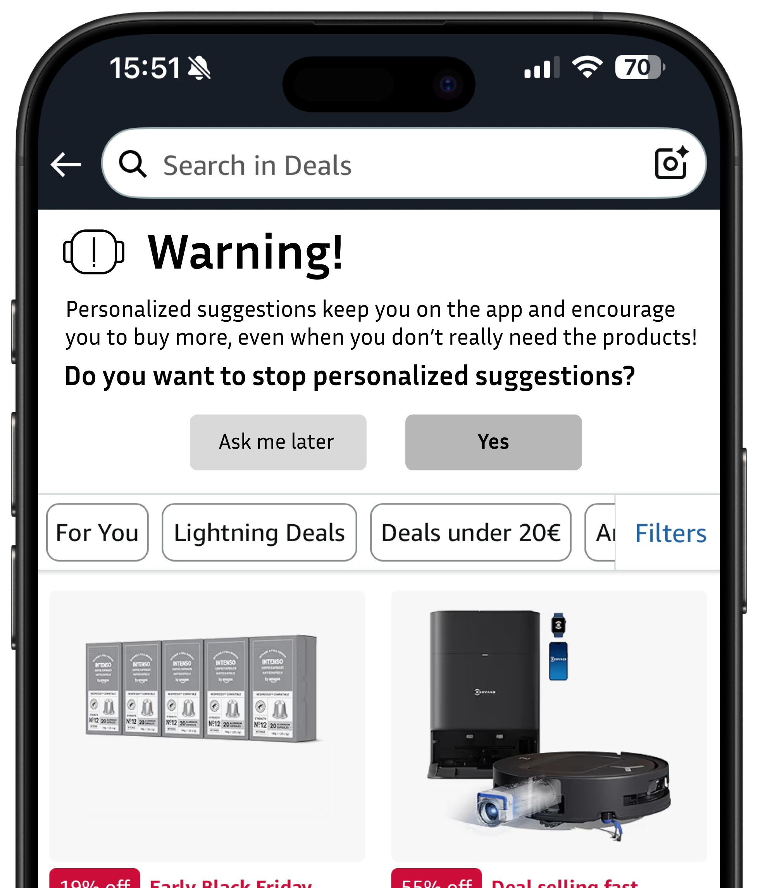
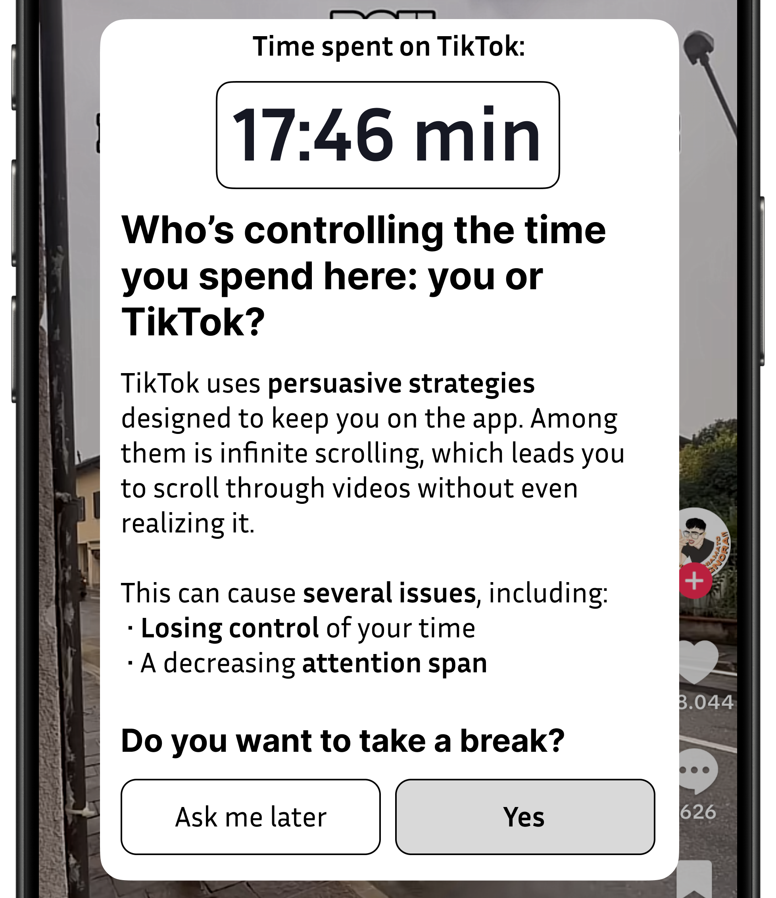

Guide to Design Transparency Labels
1. Role
The presence of damaging patterns within digital platforms has become increasingly manipulative over time, pushing users to spend more time online and lose awareness of their actions.
Design Transparency Labels are created to counter this phenomenon by offering clear information and useful tools to recognize such dynamics.
Their purpose is to enable an immediate understanding of the mechanisms that shape the feed and recommendation systems, including through small insights that make recurring patterns visible.
In addition to this informational role, DTLs also take on an educational function, helping users develop greater awareness of the digital processes they interact with daily.
1.1. Target
Address a broad and diverse user base by tailoring DTL content to different
levels of digital literacy and experience. Use clear, jargon-free language, and
whenever possible, anchor the DTL’s message to the user’s own behaviour
within the digital service.
- Design DTLs for the same audience as the digital platform in which they are integrated.
- Avoid technical or overly specialized references: DTLs must be understandable by anyone, even by those without advanced digital skills.
- Design DTL deployment to selectively reach users impacted by the pattern, rather than displaying them indiscriminately to all users.
Example – TikTok

The positive example follows all the practical strategies of this guideline:
-
strategy 1.1.1 because TikTok is a platform with a predominantly young audience, and the communication style is adapted to match the platform’s target;
-
strategy 1.1.2 because it uses simple and accessible language;
-
strategy 1.1.3 because the label is shown to a user who is interacting with the TikTok feed, which is influenced by damaging patterns.
The negative example does not comply with strategy 1.1.1, as it uses language that is not suitable for TikTok’s young audience, nor with strategy 1.1.2, since it relies on technical terms that are not appropriate for a message that should remain brief and straightforward. It only meets strategy 1.1.3, as the label is consistent with the context in which it appears.
1.2. Perception and impact
Frame the DTL as a positive support tool for user wellbeing, not as a warning or
annoyance. Use a friendly, non-judgmental approach and familiar, reassuring
visuals (e.g., a helpful icon or assistant figure) so that users trust the label and
do not find it intrusive.
-
Design the labels as a companion-like presence, not as an element that imposes limits.
-
Adopt positive and collaborative message framing to minimize perceived blame and defensiveness, avoiding explicit references to errors or “incorrect” behaviors that could negatively impact user engagement.
-
Consider the possibility of simulating a digital assistant or friendly advisor, rather than a technical warning.
Example – YouTube

The practical strategies used here are 2:
-
strategy 1.2.1 because the icon is meant to simulate a friendly presence;
-
strategy 1.2.2 because it uses positive messages that do not blame the user, but instead explain the pattern.
Example – Amazon
The practical strategies used here are 2:
-
strategy 1.2.2 because it uses positive messages that do not blame the user, but instead explain the pattern.
-
strategy 1.2.3 is applied by using Amazon’s internal AI as a digital wellbeing assistant, offering the user a supportive figure to interact with.
2. Language
Language is one of the most influential elements in the design of Design Transparency Labels.
Since DTLs are created to make the mechanisms operating behind digital interfaces understandable, it is essential that they communicate in a way that is clear, accessible and consistent with the audience they are addressing.
Only precise and inclusive language can guarantee genuine transparency.
2.1 Tone of voice
Use a firm and authoritative tone that guides the user in understanding what is happening, helps them orient themselves, and conveys the feeling of being in control of their time.
-
Use a personal tone to foster a sense of closeness and engagement with the user.
-
Use short, active sentences that explain the mechanism, e.g., “This feed adapts to keep you scrolling”
Avoid distant and impersonal language. -
For e-commerce platforms, the tone should be professional and consistent with the platform’s brand identity.
Users invest money in these spaces, so it is important to find a balance between authority and empathy. -
The language of DTLs must be consistent with that of the platform hosting them.
A tone or communication style that feels out of place may make the information seem less reliable or even disconnected from the user’s experience. -
Always include a brief explanation of why a pattern can be harmful.
Understanding the reason helps the user recognize the mechanism and develop more aware behaviors on the platform. -
Encourage user reflection through targeted questions that invite them to think about their behaviors or about the platform’s dynamics.
Strategic questions increase cognitive engagement and foster deeper awareness without being invasive or moralizing. -
Make the connections between user actions and the content being shown explicit.
This helps the user understand the nature and logic of damaging patterns. -
Rely on empathetic wording that normalizes the behaviour, e.g., “It’s easy to lose track of time here”
Example
The feed will keep showing you new content without interruptions. This mechanism pushes you to keep scrolling without taking breaks, making it harder to perceive the time spent on the platform.
You should take a break. You’ve wasted too much time here.
The positive example follows 3 practical strategies:
-
strategy 2.1.1, because it adopts a perspective that stands on the user’s side, conveying closeness and support;
-
strategy 2.1.5, because it clarifies why the pattern is harmful, making its impact immediately understandable;
-
strategy 2.1.7, because it links the pattern to a cause and an effect, helping the user understand the dynamics that generate it.
The negative example does not follow any of the recommended practical strategies: it uses judgmental language, places blame on the user, and offers no explanation of the potential negative effects of the pattern.
2.2 Hook
Use a concise attention-grabber to draw focus to the DTL at the moment it matters. This “hook” can be a question or a personal metric (e.g., time spent, number of items viewed) that gently prompts the user to reflect, delivered in a way that is noticeable but not disruptive.
-
Encourage user reflection through targeted questions that prompt them to consider their own behaviours or the platform’s underlying dynamics
This approach helps engage the user in a natural way and supports awareness without interrupting the experience. -
Embed a personally relevant metric, e.g., You’ve watched 12 videos in a row
The more authentic and personal the information is, the greater the emotional impact and the effectiveness in capturing the user’s attention.
Example – YouTube
Example – TikTok
Example – Amazon
The practical strategies adopted are shared across all the examples shown:
-
strategy 2.2.1, because the labels include useful data and information that can trigger user reflection in a quick and conscious way; in fact, all three examples provide insights that help users become more aware of how they are using the platform;
-
strategy 2.2.2, because the data shown are personal and real, fostering empathy and emotional involvement and helping the user recognize their own behavior; in fact, all three examples make use of the user’s actual data.
The examples focus on the number of products viewed (for e-commerce), the time spent on the app, and the number of scrolls performed (for social media).
3. Design
The design of DTLs requires a balance between clarity, aesthetics and functionality.
The interfaces of digital platforms differ significantly from one another and host design patterns that are equally diverse: even when the pattern is the same, its appearance and its interaction with the user may vary depending on the context of use and the platform’s visual style.
For this reason, every visual and structural choice must contribute to making information accessible and consistent with the environment in which the DTL is placed.
Design is not just a matter of aesthetics, but a means of conveying transparency in an intuitive, recognizable, and context-aware way.
3.1 Shape and size
Fit the DTL’s form to the interface context. Calibrate the label’s shape and
size so it integrates smoothly with surrounding UI elements—large enough to
read at a glance, but not so large as to break the layout or appear intrusive.
-
Adapt the DTL to the available layout space by designing wider labels when the interface allows it, aligning them with existing UI components (e.g., cards, banners, or content blocks) to ensure visual stability and coherence.
-
Define clear proportional limits for the DTL’s size and visual weight, ensuring that the label does not dominate the interface or visually compete with primary content, but instead remains consistent with the hierarchy and prominence of surrounding elements.
-
Match the geometry and spacing of existing UI components, ensuring the label feels integrated rather than “pasted on”.
-
Choose compact forms on cluttered screens and larger ones when more space is available, e.g., horizontal banners vs. corner badges.
When space is limited, prioritize keywords and functional symbols. -
Limit the use of banners or overlay windows to cases where there is not enough space to integrate the label.
These solutions introduce a more invasive level of interaction and tend to generate an immediate dismissal by the user. -
Adapt the shape and size of DTLs to the context, choosing approaches that feel organic within the platform and keep user attention high, reducing habituation.
-
Use overlay banners as the main label only as a last resort, when lighter, more integrated solutions are not sufficient to communicate effectively.
-
Consider integrating the DTL into the user journey, dedicating a specific area on the page when the context allows it.
This solution can make the label more organic and visually consistent with the interface flow, without interrupting it.
Example – YouTube

Example – Amazon

Example – TikTok
The practical strategies adopted are shared across all the examples shown:
-
strategy 3.1.1, because all the labels fully exploit the available space, extending the label as much as possible within the interface; as shown in the Amazon notification example, the label adapts to the available space without overpowering the surrounding elements;
-
strategy 3.1.2, because the labels retain a low level of intrusiveness, allowing the user to continue consuming content without interruptions; in particular on YouTube, the label is placed right next to the pattern, maintaining coherence with the surrounding interface elements;
-
strategy 3.1.3, because visual consistency with other interface elements is preserved: in particular, the TikTok example mirrors the shape and size of the typical top notifications;
-
strategy 3.1.4, because given the limited available space, both the icons and the message were carefully selected, keeping them clear and essential.
3.2 Style
Align the DTL’s visual style with the platform’s look and feel, while ensuring the label stands out as a transparency indicator. Fine-tune typography, spacing, iconography, and color.
-
Use the platform’s color palette but reserving a dedicated accent color for transparency cues.
The goal is to make the label feel like an integral part of the visual experience, avoiding the impression that it is something separate or out of place. -
You can use colour to communicate the severity level of the pattern, while always remaining consistent with the brand’s palette and visual identity.
-
Use clear and immediately recognisable icons, inspired by symbols already familiar to users, to make the message easier to understand.
-
Favour elements that convey trust and awareness, avoiding visual references associated with danger or alarm.
-
Use subtle animations (e.g., a gentle pulse) to attract attention without disturbing the interaction.
This can help make less prominent labels more visible, encouraging interaction without feeling intrusive or artificial.
Example – TikTok
The positive example follows the following practical strategies:
-
strategy 3.2.1, because the colours of the label respect the platform’s visual identity, avoiding tones that feel foreign or inconsistent;
-
strategies 3.2.3 and 3.2.4, because the label uses a robot icon — a symbol that can be associated with communication about patterns — together with an exclamation mark that captures attention without conveying a sense of danger.
The negative example does not comply with strategy 3.2.1, as it disregards TikTok’s brand identity and color palette. It also fails to follow strategy 3.2.4 by using an alarmist icon. It only aligns with the underlying idea of strategy 3.2.2 by using red to convey the seriousness of the pattern.
3.3 Position
Incorporate the label into familiar areas of the interface and adjust its placement depending on the targeted pattern and underlying interface, with the aim of maximizing the probabilities of the DTL to be noticed.
-
Place the DTL at the point of interaction where the dark pattern manifests to create an immediate mental link, e.g., next to a “Watch Next” panel for autoplay.
-
If the pattern does not have a specific position on the screen, place the DTL based on usability, visibility, accessibility and consistency with the other interface elements.
-
When the main interactive elements are concentrated in the frame of the interface (as in Reels or TikTok), integrate the DTL into that same space.
This preserves visual consistency and prevents it from being perceived as a disruptive element. -
When there is not enough space in the interface to integrate a DTL in a stable way, use overlay solutions.
-
For horizontal streaming video content, place the DTL at the bottom of the screen, gradually overlapping the area where the time bar usually appears.
A slow and subtle animation helps draw attention without interrupting viewing, leveraging an area that is already familiar to the user and highly visible. -
Occasionally varying the position of the DTL to avoid user desensitization.
Once the user has associated a meaning with the DTL, experiment with different positions to maintain its visibility and perceptual impact, also using less conventional areas of the interface. -
If the interface already includes interactive suggestions, such as those offered by AI-based assistants, integrate the DTL into these existing elements.
In this way, the label becomes part of the conversational flow, maintaining visual consistency and reducing the risk of distraction or overlaps.
Example – YouTube

The practical strategies used here are 2:
-
strategy 3.3.2, because the label is placed in a clearly visible area and does not interfere with content consumption;
-
strategy 3.3.3, because it integrates naturally into the context, becoming an organic element among the interactive components of TikTok’s interface.
Example – YouTube
The practical strategies used here are 2:
-
strategy 3.3.1, because the label is positioned within the video, which is exactly where the damaging pattern concentrates the user’s attention;
-
strategy 3.3.5, because it creates an unexpected element, in a space where the time bar would usually appear, which inevitably attracts the user’s attention.
Example – YouTube

The practical strategy used here is 1:
-
strategy 3.3.2, because the label is placed in a clearly visible area, next to the title of a section of the interface, and does not interfere with content consumption;
4. Dynamics
User control is a core principle of Design Transparency Labels.
Each DTL should not only inform, but also offer the possibility to act consciously, turning awareness into choice.
Giving control back means allowing the user to decide how to interact with the platform, strengthening trust and the perception of an autonomous and respectful experience.
4.1 Timing
Display the DTL at the right time: it should appear exactly when the targeted pattern occurs (e.g., when infinite scroll or autoplay triggers), so the trans- parency message is contextually relevant. Avoid showing it too early, too late, or too often, to prevent it from being ignored.
-
Display the DTL only when the persuasive AI strategy is active.
-
Display DTLs at irregular or non-fixed intervals to prevent visual habituation and sustain user attention. For instance, avoid constant repetition by introducing frequency rules, e.g., showing the label after a certain number of scrolls or after a set amount of time.
Their effectiveness depends on their ability to surprise and adapt to user behaviour, not on frequency alone. -
Avoid keeping DTLs constantly visible.
Except for specific cases, it is preferable that labels appear only at the most relevant moments in the user journey, in order to preserve their effectiveness and communicative impact. -
Vary DTLs to avoid monotony, but retain consistent visual elements that make their meaning clear, such as a colour, an icon or a style.
-
Define precisely the time interval between DTL appearances, based on data and user behaviour patterns.
Planning frequency consciously helps maintain communicative effectiveness, avoiding both excessive repetition and poorly timed interruptions. -
Avoid allowing the DTL to be closed immediately.
Keep it visible long enough to ensure the message can be read, supporting understanding without generating frustration or a feeling of being constrained.
Example
Showing the damaging pattern at the exact moment it occurs — for example, when autoplay automatically starts a new video after several repetitions — while avoiding excessive frequency and adjusting the label’s timing and appearance to each user’s individual behaviour.
Display the label about recapture notifications in the middle of a video, without any context, always at the same moment and with the same frequency.
The practical strategies used in the positive example are 4:
-
strategy 4.1.1, because the correct version clearly states that it captures the right moment, namely when the pattern appears;
-
strategy 4.1.2, because it takes habituation into account and tries to avoid it;
-
strategy 4.1.3, because it specifies that the labels should not always be fixed in place, emphasising the dynamic nature of this tool;
-
strategy 4.1.5, because it defines the fact that the display time is different for each user.
The negative example does not comply with strategy 4.1.1, as it does not appear when the pattern is actually taking place, nor with strategy 4.1.4, since keeping the same timing for its appearance inevitably leads to habituation.
4.2 Adaptability
Make the DTL adaptable over time. Prepare multiple versions or states of the label that can rotate or evolve based on user behavior—for example, escalating the emphasis if the user ignores the label repeatedly. This dynamic approach keeps the transparency intervention effective and counters habituation.
-
Vary the level of intervention of DTLs, alternating lighter, reflective or more proactive communications, to gradually guide users towards greater awareness.
-
Prepare multiple textual and visual variations to cycle through, reducing the risk of habituation.
-
Some versions of the DTL can emphasise the harm caused by the pattern, while others can highlight the time spent by the user or how they could have acted more consciously.
It is important to understand which type of communication is most effective and how to target each label according to context and audience. -
Integrate a feedback loop that enables the DTL to adapt over time, so that the label can adjust its tone, frequency, or format. For instance, escalate the message subtly if the user repeatedly ignores the label, e.g., shifting tone from “just so you know” to “want to pause this?”.
Example – YouTube
The practical strategy used is 1:
-
strategy 4.2.1, because as the time spent on the platform increases, the label changes and adapts its information based on the user’s behaviour.
4.3. Interactivity
Empower the user through the DTL by providing them with clear call-to-actions
-
Integrate small textual microinteractions where possible (e.g. “Got it”, “Show me more”, “Ignore for now”, "Ask me later") that allow the user to choose how to proceed.
Small actions like these increase the sense of control and make the communication more dialogic and natural. -
Ensure the call to action is always clear and easily visible so that users feel that they can actively influence their own behavior, and provide a secondary action that opens a deeper explanation.
Providing an immediate option that has real consequences helps the user turn awareness into behaviour, restoring a sense of control. -
Allow users to disable DTLs, so they are not perceived as an imposition or constraint.
Having a choice strengthens trust and helps build a more transparent and respectful experience.
Example – Amazon
Example – TikTok
In both examples, the same practical strategies 4.3.1 and 4.3.2 are applied: the call to action is immediately recognisable, thanks to a clearly highlighted question (using font size and bold), accompanied by clear buttons that guide the user’s choice.